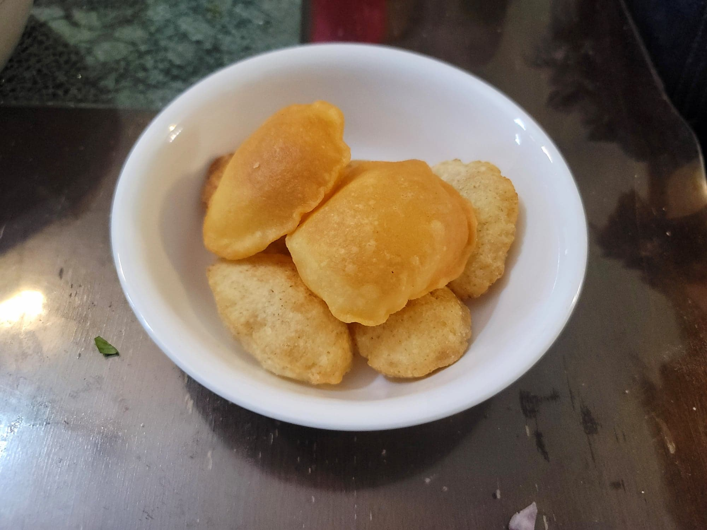

Puri

Ingredients:
- 1 cup (160 g) Fine semolina (Sooji)
- 1/8 tsp Baking soda
- 1/4 tsp Salt
- 1 tsp Canola oil
- 1 tbsp Flour
- 6 tbsp Water
- Oil, for deep frying
Instructions:
- Whisk together the semolina, baking soda, and salt. Then mix in the oil with your hands.
- Mix in the flour and then knead in 3 tbsp of water. Knead until as smooth as possible, and then knead in 1 more tbsp water. Knead in the final 2 tbsp water until smooth. If the dough is too soft, add more semolina. If too hard, add more water.
- Cover and let the dough rest for 30 minutes. Then knead one more time. Meanwhile, heat some oil to 350 degrees Fahrenheit.
- Divide the dough into 3 pieces. Cover the dough while not using. Take some of the dough and roll it to about 1.5-2 mm thin. Cut out circles with a 2 inch cookie cutter. Fry the dough circles as they are cut out in the oil. Fry until puffed up and golden throughout. Repeat for the rest of the dough.
- Transfer to a paper-towel lined plate to absorb any excess oil. Use immediately.